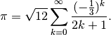

Introduction¶
The Python scientific environment is often referred to as an ecosystem: it is made of different packages that manage to coexist even if they are developped by different groups of people (mostly individuals on their spare time).
| Python: | A multi-paradigm, multi-purpose flexible langage with an exuberantly rich standard library |
|---|---|
| NumPy: | Provides a powerful array model and vectorized functions |
| SciPy: | Numeric libraries: scientific constants, FFT, integration, interpolation, sparse and dense linear algebra, optimization, non-linear solvers, special functions and much more... |
| matplotlib: | Curve plotting and data visualisation in an impressive number of ways |
This ecosystem is very active and successful, and as a result, it has expanded to the point of outshining several modules from the Python standard library, such as random and math, which can completely and safely be forgotten by the data scientist.
- The NumPy array model ndarray instead of list or tuple and NumPy’s vectorized operations instead of for loops
>>> %timeit [_**2 for _ in xrange(1000000)] 1 loops, best of 3: 102 ms per loop >>> import numpy as np >>> %timeit np.arange(1000000)**2 100 loops, best of 3: 5.54 ms per loop
- numpy instead of the standard library math
>>> import math >>> x = [math.pi * _ / 999999 for _ in xrange(1000000)] >>> %timeit [math.sin(_) for _ in x] 10 loops, best of 3: 171 ms per loop >>> x = np.linspace(0, np.pi, 1000000) >>> %timeit np.sin(x) 10 loops, best of 3: 29.6 ms per loop
- numpy.random instead of the standard library random
>>> import random >>> %timeit [random.uniform(-1, 1) for _ in xrange(1000000)] 1 loops, best of 3: 455 ms per loop >>> %timeit np.random.uniform(-1, 1, 1000000) 100 loops, best of 3: 14.3 ms per loop
- numpy.sort instead of the builtin sorted:
>>> x = [random.gauss(0, 1) for _ in xrange(1000000)] >>> %timeit sorted(x) 1 loops, best of 3: 809 ms per loop >>> x = np.random.standard_normal(1000000) >>> %timeit np.sort(x) 10 loops, best of 3: 93.9 ms per loop
Exercise: Waving for loops goodbye
Compute  , as given by the Madhava formula:
, as given by the Madhava formula:

The k indices ranging from 0 to (let’s say) 29 will be returned by the NumPy function arange (see above) and will be computed by calling another NumPy function (sum), instead of using a for loop.
[Solution]